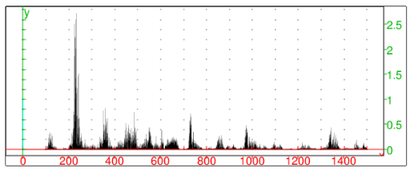

15.1.10 Visualizing power spectra: plotspectrum
The plotspectrum command displays the power spectrum of an
audio clip.
-
plotspectrum takes one mandatory and one optional
argument:
-
A, an audio clip.
- Optionally, range, which can be in the form
range=[lf,uf] or range=lf..uf, where lf
is the lower bound and uf the upper bound of the desired
frequency band (by default, range=[0,s/2] where s
is the sampling rate).
- plotspectrum(A ⟨range⟩)
displays the power spectrum of the audio data on the specified
frequency range.
If the audio clip has more than one channel,
the channels are mixed down to a single channel before computing the
spectrum.
Example
Assuming that a male voice is recorded in the file
example1.wav:
Input:
| clip:=readwav("/path/to/sounds/example1.wav"):; |
| plotspectrum(clip,range=[0,1500])
|
Output:

You can see that the dominant frequency is around 220 Hz, which is the
middle of tenor range. This is consistent with the fact that a male is
speaking in the clip.